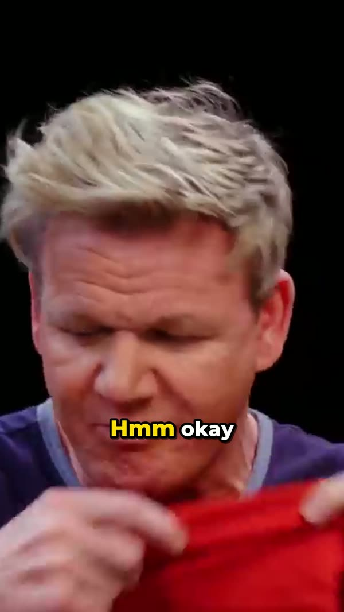

The replays
The most-replayed graph YouTube publishes. The start of a video always sits at the maximum, so Cutlantis reads the departure from the trend rather than the raw value — only true peaks survive.
YouTube already knows which moments your audience rewinds to. Cutlantis reads that curve, listens to the voice, weighs what is actually said — then hands you vertical, captioned clips ready to post.
Clipping campaigns pay per view. At €1 per 1,000 views, 89,000 views of your clips pay for Cutlantis at the launch price — 199,000 at the regular price. Everything after that is yours.
Clipping campaigns pay per view. At €1 per 1,000 views, 89,000 views of your clips pay for Cutlantis. Everything after that is yours.
A ballpark, not a promise. Campaigns usually advertise $1 to $5 per 1,000 views depending on the campaign and platform; per-clip caps and rejected views lower real earnings. Worked out at the price shown.
A good clip is not just a strong moment: it is a moment that stands on its own. These three families of signals are combined and weighted, and every clip tells you what made it stand out.
The most-replayed graph YouTube publishes. The start of a video always sits at the maximum, so Cutlantis reads the departure from the trend rather than the raw value — only true peaks survive.
Loudness and dynamics measured every 50 milliseconds. Emphasis, laughter and a rising voice show up in the waveform before they can be read in the text.
On the word-level transcript: strength of the opening, presence of a payoff, numbers, emotional charge. Plus penalties — a clip starting on "so anyway" means nothing out of context.
When a creator runs a sponsor read, many viewers skip it — and all land in the same spot. On the most-replayed curve, that landing point becomes one of the highest peaks in the video. A tool that follows the curve blindly will offer to turn it into a clip.
Cutlantis spots sponsored segments: the community-built SponsorBlock database, the video's chapters, and the transcript read alongside the description — brand named, promo code, "link in the description". It never makes a clip from them, and it erases the fake peak that follows from the curve.
Measured on 52 sponsored videos from large French YouTube channels, September 2026. When SponsorBlock doesn't know the video yet, the filter relies on the transcript alone: 17%.
Set the edges on the strip — the most-replayed curve guides you — or click a line of the transcript. Cutlantis does the rest, just as for a clip it proposed:
Seven new features, included in the purchase.
Click a word to fix it, “replace everywhere” for a name or a brand. Uncertain words are flagged.
As soon as a channel posts, Cutlantis downloads, analyzes and prepares the clips. You post first.
Silences cut, zooms on the strong moments, an opening hook and teaser: what holds viewers on TikTok.
Public Twitch and Kick replays, most video sites, your own videos and audio podcasts.
The frame follows whoever is speaking, or the screen splits: one on top, one below.
For each clip: post text, channel credit and hashtags drawn from what is said.
Font, colours, watermark and logo, saved as reusable styles.
1080 × 1920, captioned word by word, framed, titled, audio at the level platforms expect. These frames come from videos analysed as they are.

The video is downloaded, transcribed and edited on your machine. No video is uploaded anywhere, there is no account to create and no minutes to buy.
Some videos, usually recent ones, do not expose that graph. Cutlantis says so and falls back on voice and text. The selection stays good, just less guided by the audience.
Three sources: SponsorBlock, a community database where viewers flag sponsored segments (queried anonymously: the video never leaves your computer); the video's chapters; and the transcript, read alongside the description — brand named, promo code, "link in the description". Detected segments show up hatched on the strip.
Yes: Twitch (public replays), Kick, most video sites, and your own files, video or audio podcasts. The most-replayed curve only exists on YouTube: elsewhere Cutlantis relies on voice and text, and manual mode is always there.
Transcription handles most common languages and detects the video's own, Japanese and Chinese included. The opening-strength rules are tuned for French and English today.
On five minutes of video: about twenty seconds to download, one minute to transcribe, then roughly fifteen seconds per exported clip.
Everything: in and out points to a tenth of a second, framing, title, style, and every caption word — click a word to fix it, or “replace everywhere” for a misheard name. You can also add a passage by hand.
Bug fixes are free. Each new version, with new features, costs €15 if you want it; otherwise your version keeps working, forever. No subscription.
To download the video, yes. Transcription, analysis and export then happen on your computer.
An Apple silicon Mac (M1 or later) on macOS 14 Sonoma or later, or a PC on Windows 10 (version 1809 or later) or Windows 11, 64-bit. Allow about 3 GB of free space.
Cutting someone else's video to repost it needs their permission. Clipping campaigns grant it for the videos they cover; otherwise, Cutlantis is built for your own videos or ones you have the right to use.